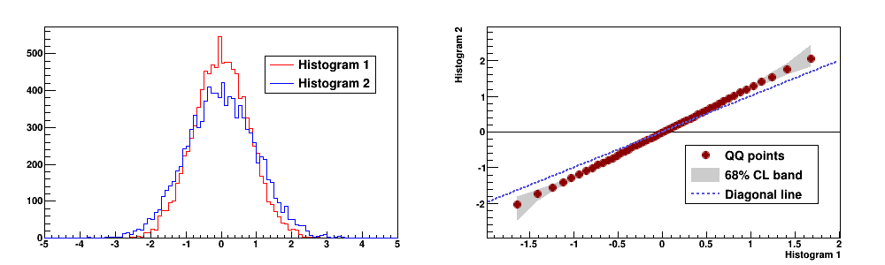

Draw a Quantile-Quantile Plot and Confidence Band¶
This is an example of drawing a quantile-quantile plot with a confidential level (CL) band, originally by Zhiyi Liu, zhiyil@fnal.gov
Python source code: plot_quantiles.py
import ROOT
from rootpy.interactive import wait
from rootpy.plotting import Hist, Canvas, Legend
from rootpy.stats.utils.quantiles import qqgraph
ROOT.gROOT.SetStyle("Plain")
ROOT.gStyle.SetOptStat(0)
ROOT.gStyle.SetOptTitle(0)
c = Canvas(width=500, height=600)
c.Divide(1, 2, 1e-3, 1e-3)
rand = ROOT.TRandom3()
h1 = Hist(100, -5, 5, name="h1", title="Histogram 1", linecolor='red')
h1.Sumw2()
h1.SetLineColor(ROOT.kRed)
h2 = Hist(100, -5, 5, name="h2", title="Histogram 2", linecolor='blue')
h2.SetLineColor(ROOT.kBlue)
for ievt in xrange(10000):
#some test histograms:
#1. let 2 histograms screwed
#h1.Fill(rand.Gaus(0.5, 0.8))
#h2.Fill(rand.Gaus(0, 1))
#2. long tail and short tail
h1.Fill(rand.Gaus(0, 0.8))
h2.Fill(rand.Gaus(0, 1))
pad = c.cd(1)
h1.Draw('hist')
h2.Draw('hist same')
pad.SetTitle("")
leg = Legend(2, pad=pad, leftmargin=0.5, topmargin=0.11, rightmargin=0.05)
leg.SetFillColor(0)
leg.AddEntry(h1, h1.GetTitle(), "l")
leg.AddEntry(h2, h2.GetTitle(), "l")
leg.Draw()
pad = c.cd(2)
gr = qqgraph(h1, h2)
gr.GetXaxis().SetTitle(h1.GetTitle())
gr.GetYaxis().SetTitle(h2.GetTitle())
gr.fillcolor = 17
gr.fillstyle = 'solid'
gr.linecolor = 17
gr.markercolor = 'darkred'
gr.markerstyle = 20
gr.title = "QQ with CL"
gr.Draw("ap")
x_min = gr.GetXaxis().GetXmin()
x_max = gr.GetXaxis().GetXmax()
y_min = gr.GetXaxis().GetXmin()
y_max = gr.GetXaxis().GetXmax()
gr.Draw('a3')
gr.Draw('Xp same')
# a straight line y=x to be a reference
f_dia = ROOT.TF1("f_dia", "x",
h1.GetXaxis().GetXmin(),
h1.GetXaxis().GetXmax())
f_dia.SetLineColor(9)
f_dia.SetLineWidth(2)
f_dia.SetLineStyle(2)
f_dia.Draw("same")
leg = Legend(3, pad=pad, leftmargin=0.45, topmargin=0.45, rightmargin=0.05)
leg.SetFillColor(0)
leg.SetShadowColor(17)
#leg.SetBorderSize(3)
leg.AddEntry(gr, "QQ points", "p")
leg.AddEntry(gr, "68% CL band", "f")
leg.AddEntry(f_dia, "Diagonal line", "l")
leg.Draw()
c.Modified()
c.Update()
c.Draw()
wait()
Total running time of the example: 0.10 seconds